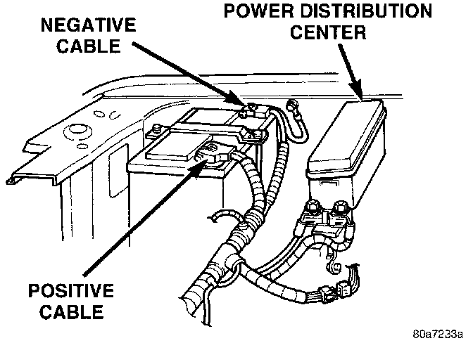

Wiper Relay: Service and Repair
Intermittent Wipe Relay ReplacementREMOVAL and INSTALLATION
1. Disconnect and isolate the battery negative cable.
Power Distribution Center:

2. Remove the cover from the Power Distribution Center (PDC) .
3. Refer to the label on the PDC for intermittent wipe relay identification and location.
4. Unplug the intermittent wipe relay from the PDC.
5. Install the intermittent wipe relay by aligning the relay terminals with the cavities in the PDC and pushing the relay firmly into place.
6. Install the PDC cover.
7. Connect the battery negative cable.
8. Test the relay operation.